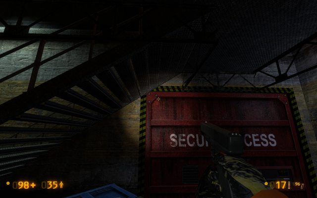
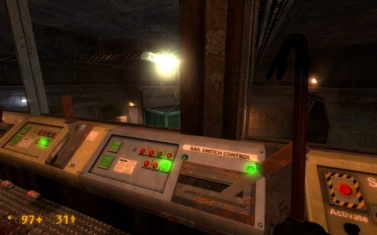
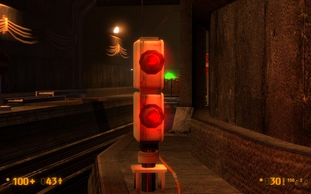

I did my second playthrough today and yet again, what an amazing job you did TEXT! I saw new stuff this time round and wanted to post it for you to make it even beter.
.RK has a good list of stuff that needs attention but here is some of the things I also realized:
A1
I think it will be very clever if the doors where you run the Marine over is locked from that side. It’s strange that the two marines and the Houndeyes haven’t noticed each other the whole time. For the puzzle it will also benefit more if there doors are closed
The color shades of the tracks seem to differ from each other as in the screenshots below:
I don’t know if you fixed the turret being knocked over because each playthrough it never got knocked over by the Houndeye’s blast.
But I can disable it by knocking over the crates and it falls on the turret. Not sure if that’s a problem. Just mentioning it.
The texture of the crane control room looks odd.
The two headcrabs on the top of the stairs in the control room, when they attack, they tend to jump way over your head and sometimes ‘float’ a little of the ground against the wall behind you.
A2
My second playthrough of A2 was much better this time. This time I was able to use the turret and 1 HECU soldier survived.
The bullsquid in the dark office is a little odd for me too, except if they have tremendous sight in the dark. Though, he did give me an unbelievable scare both times.
There is one random Vort hiding in the locker room that zaps me when I get out of the dark office with the bullsquid. Don’t know if he’s suppose to do something or just hide there.
This time the invisible player was not there in the cafeteria.
The four Vorts that spawns behind you in the cafeteria is something I think that could be removed or altered.
One more thing about the cafeteria… I really don’t like the plants. They don’t fit in with the lighting or the mood of the office. I’m all for plants there, but then consistent plants. Maybe just four flower pots or so…
I think that the new alpha map looks better in a lot of aspects than the former version seen on the video (for example, the flooded track route below, with the ambush of the two zombies at the tram). It is a great addition, and represents the same quality as the other maps made by the BM Devs. Just as the ST Uncut that I also enjoyed very much. On the whole, the maps are in a much better stage of completion that one would expect from an alpha version, to say the least.
As I recall, the absolutely positive changes (compared to the first version shown on the video) are:
The new cafeteria looks much better, without the bright lights and that awful tiled floor.
The new area I already mentioned (the flooded tunnel below with the crashed train and the zombies).
The separate tunnels and corridors in the A1 map are better connected together than before.
I also like the new room that shows another sign of battle between the soldiers and the security guards (the other one is the room in A2 map where you can lift the barriers). It seems that the barricaded guards fighting to the death were a hard nut to the soldiers…
But, to make things even better, I also have some suggestions: A1 map:
In the room where you can turn on the power, there are three Houndeyes, and also a marine at the - opened - door next to the tracks (with the other one standing in front of the tram whom you can run over ). I think that door should to be closed when you get there, for it is not realistic that the marine stands patiently in front of an open room which is full of monsters and doesn’t care anything about it. The best would be that the door could be opened only from inside (while coming there from the room with the big pipes and the bullsquids).
A2 map:
On the whole, the structure and style of the map is correct, and compatible with BM’s On a Rail maps. However, I think that the lighting in the office complex should have been set in a different style. I don’t speak about the brightness level; it is okay that this area is very dimly lit and dark, it fits to the atmosphere of the chapter. But, if we want to be realistic, just can’t forget that the office area was meant to be a workplace before the resonance cascade, so there were a lot of people constantly walking there and busily doing their jobs, as seen from the amount of the corpses, if nothing else. So, it wasn’t an abandoned maintenance area or storage room, where only one or two mechanics sometimes show up to do some packaging and repairing jobs, but - as its name also shows - a pretty crowded office complex, even if it is definitely not as much important that the one seen in the Office Complex chapter. Why it is lit so dimly then? It is certain that the reason of the whole area being dark is not that most of the lights went off, but that it wasn’t even lit properly before the catastrophe, at least not as much that is proper for a workplace. I, for myself, would certainly refuse to work in such a darkness.
Thus, I suggest that in order to both keep the dark and dimly-lit style of the area and, at the same time, making it more realistic, just make the lighting similar to the BM chapter Office Complex. There, some of the corridors and rooms were quite brightly lit, while most parts of the chapter was dark because of the went-off or flickering lights, or reddish fire alarm lights. I know that you stated previously that you used just the same style at the office complex area as it was used in the Office Complex chapter, but I think it only applies to the smaller office rooms, but not to the larger ones like the conference room with the big table in the center, and also not to the corridors which are quite too dark. I think it would be far more realistic if you revise the lighting theme this way.
Some of the offices, especially on the uppermost floor, can not be accessed at all. I think it would be better to make some more of them accessible.
But, aside from these small things, I found the two maps very interesting and exciting, it is far better that the original HL1. I am eager for the second part - the B maps - as well!
I just want to say this - and it might sound very corny - but you guys are fucking awesome. I wasn’t expecting anything like this level of community response and the fact that everyone’s taking the time to write detailed screenshots with pictures and everything (which I KNOW is a time consuming process), it’s actually quite inspiring. Not only are you guys providing the feedback which will help to improve the maps significantly, you’re also giving me the drive to carry on pushing through mapping out the B maps. So I’ll say it one more time - thanks everyone. Even those of you who don’t post feedback - thanks for taking the time just to check it out.
Before I begin to address more of the feedback, I figured I’d take a moment to explain the reactive scripts I implemented. You’ll notice there are 2 ways to approach the Office Complex - from the front and from the rear. There are then 3 ways to approach the end section of track (with the big Vort vs HECU fight) - from the stairwell, from the tracks, or dropping down from the cafeteria. I had to script the fights to respond appropriately for each scenario, which was more of a pain than you can imagine. This could be why people are getting such different results to me, I would guess. I tend to play the map in the same way every time - so I always approach the Office Complex from the front, and go down the stairwell to reach the end track. That was the “intended,” “right” route, if you like - though obviously every route is valid. That also seems to be the route where the fights play out the most balanced by far. The most interesting aspect of the script which I thought was pretty clever (though I do say so myself) is the way the doors respond when you reach the office complex. If you approach from the front, the bottom door by the stairwell at the front locks and has a barricade appear behind it. This means you have to traverse the entire complex as a result. All other stairwell doors are left open. If you approach from the rear, the bottom rear stairwell door (the one by the break room) is locked and barricaded, again making it so you have to travel to the other end to get upstairs. This is why people might be getting differing responses.
You’re right in that I can’t please everyone - and I wasn’t expecting to. Like I said if you didn’t like A1 that’s totally fine and I can understand why you don’t - it does feel quite empty as a map. I was just trying to explain to you the reasons for that and why it is the way it is.
Cheers for the more detailed feedback. You took the time to write it, so I’ll take the time to address some of the points.
I’ll play with the lighting in the Office Complex a bit - but not too much. I’m personally pretty happy with its current overall balance - but you’re right, having the lighting direct the player a bit better to the security office is a nice idea.
The orbs present above the lights (normally called sprites, coronas, or lightglows) are in Black Mesa’s fluorescent lights too - but as I said to someone earlier - they’re used very inconsistently in Black Mesa. I don’t like the idea of having them on some of the lights but not on others. Doesn’t sit well with me. I could shrink them down and make them more translucent, but I don’t think I’ll remove them.
-The rail gap will be fixed.
-The “stash” will be frozen. It was something I’d originally intended to do when I had that problem myself but simply forgot about it.
-The left side gate going into the floor was just a dumb error. Easily fixable, already done.
-No idea what causes stuff to go pitch black when it dies. Almost certainly has nothing to do with me though.
-The unfinished door being wooden with the other ones being metal is an inconsistency in Black Mesa’s models and their materials. That same problem is present on every locked door you find in the game.
-The Zombies and Vorts thing you mentioned is pretty weird - because I distinctly remember them fighting one another on my last playthrough. I’ll look into it. I’m already considering removing the Vorts from that segment as it’s a bit much for the player. There are too many.
-Losing the tram is a pain in the freaking arse. I’ll see what I can do about it.
-As for the electrified water being skippable, I know about that - in fact it was pretty much the first thing I did when I implemented that water. I love finding creative jumps and things like that. I was originally going to block the jump off with playerclip, but I figure why not leave it in? If the player wants to advance without their tram THAT BADLY, then let them. Plus it covers the eventuality that players may have lost their tram at some previous point.
As for the transition, I really don’t understand what you’re talking about there. Could you clarify that?
Cheers for trying to help me get to the root of this issue. It’s a weird one, and I may try and contact the BM Devs to see what they know about it. I will try and solve it, but I’m not an AI Programmer or a Coder. I don’t really know where to start. Sadly - I’m not sure the BM Devs did either - which is why they very rarely seemed to cross over Vorts and the HECU.
I took a look at the setup they used on the B map to make the Vorts and the HECU fight, and it’s basically nothing. They didn’t do anything special aside from put the Vorts and the HECU next to each other. So it’s weird that they act so strangely on my maps too. I’ll try and figure it out.
Cheers for the feedback, there’s plenty of stuff in there that I missed. I was amazed you were able to stick to under 100 points, but also VERY pleased!
As you said there are lots of issues here that I’m aware of, but this list will serve as a very nice way to remind me to fix them in the future when I start polishing up the maps once the B maps are complete.
Lots of what you call “lighting inconsistencies,” however, are unavoidable - particularly with the physics objects you were pointing out. MOST of them I have no control over - especially the weird lighting on the doors. I don’t know what causes it, I don’t know how it happens - but I do know it was a problem I had throughout all of ST Uncut and it’s actually a problem in Black Mesa too. Lots of their doors behaved like that.
Thanks for the feedback - it’s very useful. I’ll address some of your points here - and if I don’t mention any specific point, just assume that I’m going to fix it - because I will. That’s the great thing about the forum postings being the way they are here. When the work I want to do on the A maps is finished and done, I can backtrack to my Alpha release post, and then simply check off every single item from then until the end of everyone’s feedback.
The weird lighting on the pipe I’ve known about since before I released, just couldn’t figure out what was causing it. Should be easily fixable by turning it into a model, though.
As for the door to the electrical room, given the feedback I’m receiving, I will definitely close it for the next version. The reason it’s open in the first place is when the design was in its early stage I wasn’t originally planning to have that area link up with the crane. It just sorta came about. So that was originally going to be just a way across the loop.
As for the electrical box thing, you’re right, that could do with a fixing. I’ll say my only defense here is that the BM Devs do that loads too if you take a look on the maps where they’ve used them.
As for the infinite ladder - I just used the same model the BM Devs used on the A map - which does so happen to be ridiculously huge for some reason.
The gap was just me forgetting to shrink it. I meant for there to be a gap, but I also meant for it to be much smaller.
As for the rest - I agree with pretty much everything on all counts - except for the part about the lighting at the beginning of the office complex.
I actually had a lot of complaints when the video released that the area at the beginning was too well lit and it harmed the mood and theme of the Office Complex as a whole - and I agreed. It also didn’t fit with the song, which called for a little bit more darkness. Overall I think it’s pretty balanced the way it is now - I really like the little red glow the lights by the pipes add to the hallway. Someguy pointed this out as well - to help alleviate some of the potential disorientation I could put a light above the door you come in from, and leave it at that.
It’s not intentional, it’s a balancing problem which I will work to address. I’ve received a fair amount of flak for using large numbers of Vorts - but I guess I’ll point it out again for everyone - I HAVE to. It takes about 4 - 5 Vorts to comfortably take out a single marine on a level playing field in Black Mesa, whereas in HL1 it required 1 - 2. I’ll try and make the playing field more in favour of the Vorts, so I don’t have to use such large numbers.
Yeah, I forgot to set that output to fire only once. Easily fixable.
Not yet. The B map you have now is basically an “unedited” B. It has a different opening and rebuilt areaportals/occluders, but that’s it. The B map which I’ll ship with the beta (which will have the A and B maps) will have an edited opening and ending, and will feature the edits made to the guard.
Cheers for the feedback man, I appreciate the kind words. I’ll briefly address some of your criticisms.
I will definitely close that door on A1. I’m not sure why the idea didn’t occur to me sooner.
On the issue of the Office Complex lighting - bear a few things in mind.
It’s consistent with the Office Complex on Black Mesa’s B map. It would seem weird to move from a really nice, well lit office on A2 immediately to a run down, crappy one on the B map - when they’re no less than what - 300m apart? I think it’s unrealistically dark too - but that’s the look the BM Devs went for, and I want to be consistent.
Lots of the lights are non-functional, presumably due to the resonance cascade. If you look around you’ll see PLENTY of lights above doors, on the walls and hanging from the ceiling which are sparking/not working. This suggests that it normally is brighter than when Gordon’s there.
I think it’s alright thematically. I will address the complaints that Someguy brought up though - because I could use the lighting to direct the player a bit better. But overall I think the general darkness works well for what it’s supposed to be.
Heh thanks. I really love this community, corny as it may sound. I wish everyone here all the best too. It really is a pleasure working with everyone here, even if we do have our ups and downs.
Actually, isn’t the upper door supposed to be accessed through the elevator in the ground level?
If so, how could the elevator get to the upper door if there are these beams blocking it?
Okay, I accept that you just want to remain faithful to the original. It is looking very good, after all. My opinion was just that this style of lighting doesn’t fully fit to the purpose of the area, but it’s beyond doubt that the other office complex made by the BM Devs looks similar. And it’s also true that there are a lot of lights which are out.
I have just one more minor suggestion: it would be cool that some parts of the tram tunnels would also being almost completely dark, with only some minor lights flickering there. It would be scary to approach and pass such an area with the tram, and it could even be ‘spiced up’ with a headcrab ambush to make it even more creepy. Maybe you could make an area like this in the following B maps, if you like the idea.
Hi text! On the second floor of the office complex where you find the two toilet rooms, (the area I pictured in the screenshot) I realized that the area is pretty barren and only the two toilet rooms are explorable. To give this area a unique look, why don’t you make two closed elevators there. This could benefit in three ways: Firstly give the office complex some diversity; sencondly give you the sense that the area is even bigger than expected; and thirdly it can explain how the scientists and personel working in the complex get down there in the first place. It could be like the main lobby for the OaR office complex.
I know your entity limit is at it’s limits, but changing this wont affect it at all I think. If there’s more space before you reach the entity limit, why not make one of the elevators an open one with a bloodied scientist corpse in it with a flickering light.
Another thing: the area in A1 you added after you posted the video, the new area on the loop where you placed another bullsquid next to the ladder leading down
to the new flooded tunnel with the two zombies and one headcrab, couldn’t you place two or three explosive barrels there which we can shoot at from a distance to
make the killing of the bullsquid more fun. I mean the first one in A1 you kill while riding to the crane blocking your way, killing the next one in the same
manner will be repreating the first kill all over again. Just some suggestions.
On my second playthrough, in hard mode, the battle between vorts and HECU at the toll bifurcation ended with 1 Vort alive, without any intrusion on my part. So, pretty balanced, certainly. The one in which you go underneath the floor, however, is entirely unbalanced. There were like… a dozen or so Vorts in the beginning? Too many. It ended up with about half a dozen Vorts around the opening at the end of your little journey underneath, another pair in that side control room, and a couple more (or maybe more than a couple, not sure) in the other side of the going-underneath-part, at the opening in which you enter. So… yeah, too many vorts alive, by far. Actually, too many vorts at the beginning. If you barged in there instead of watching them fight, you’d had to contend with, what, a dozen Vorts?
And yeah, some elevators instead of more offices on that side is a good idea. The offices lack a properly marked entrance. Sure, there are closed doors that no one can known where they lead, but surely the entrance of the whole offices would be marked in some way. An elevator would be a simple enough solution, a common shorthand for an entrance to an underground facility.
U still gonna change the signboards where u see in which direction u can find everything.
Cause first u see u need to go upwards (and u end in the storage room), but in fact u need to go to your right and then u need to go upwards:
So we gonna see more signboards on the map, or just this one?
I have another phenomenom, I see puffs of smoke coming through walls, if fights happen in another room, so I just see where they fight (not the persons, just the puffs of smoke)
Even got shocked once by a Houndeye through the wall
I also wonder when u use the switch to open the barrier to move along, where those grunts come from, I cleaned all the rooms and when I use it, they suddenly enter the room, I know they spawn somewhere, but possible to make it more believable?
Both stairwells on A2 map (at the office complex) are a bit empty and barren. It would be useful to add some more content to them (for example, some boxes, barrels, signs on the wall, or such simple things).
(Let me note that I noticed the same in the ST Uncut maps as well, both in the parking lot and, even more, near the end of the map - just before the Gargantua scene -, in a short tunnel with two huge metal gates and a single military truck where you had to go upstairs and continue through the vents.)
I’ve tested it twice, both times I lead the zombies into the hallway before triggering the Vort + HECU assault. Both times the Vorts won, but also both times the Vorts did not attack the zombies. Instead the Vorts crowd up outside the door and ignore the surviving zombie, and the zombie ignores them. I assumed it was coded that way by the BM devs since Vorts are occasionally seen near Headcrabs, but not fighting them. Vorts do kill Headcrabs and zombies in EP2 though.
I see, that’s pretty cool. A nice little secret for those creative jumpers out there.
Lastly, I might not have been clear with this part, but it isn’t a big deal. I was sort of thinking out loud about the possibility of moving the elevator + Marines to A1, just around the turn, and moving the corridor to A2 to the other side of them. see mspaint diagram
They’re fine as is. There isn’t much you can do with them, and you don’t want to overclutter the maps.
I support adding an Elevator somewhere to the Office Complex, I know it’s been discussed before but I don’t remember the outcome of that discussion. I don’t think it’s a bad idea though.
As I was writing this post, I decided to do another run through to take a closer look at some things. I also decided to start OAR from the beginning, and run through on-foot, incase anything bad could happen (such as the tram disappearing).
So here’s another list of minor suggestions and issues:
As mentioned above, an elevator could work nicely in this area. But maybe you could also consider moving the stairway from one side of the room to this side, that way the elevator may stop on the second floor and personell headed to the first floor would be right next to the stairway. Downside is that hallway down there may need to be moved to somewhere else (in place of the old stairway?).
Open this window in the Office Complex conference room. It’d be nice to look down the hall and watch second half of the battle unfold.
You might consider making the chairs in the A2 Security Office into junk props. I keep getting stuck on them and it’s very annoying.
Maybe add some trip mines somewhere? If you start OAR, you don’t get any in your starting inventory. So if you start from OAR (or just used them all), you won’t see them again until after A2.
As I was running through the cafeteria, I noticed blue lines shoot across my screen for a very brief moment. I was able to recreate it several times, I’m really not sure what that could be, it kinda looks like the electrified water bolts, but I’m stumped as to why they would flicker across my screen there. Also note, I wasn’t able to make it happen by walking or standing around the area, it only happened at that one spot while running, for a microsecond.
This turn segment of the rail is one unit higher than all the other rails.
As I was backtracking, I noticed these ghostlights at the beginning of maps. I’m not sure if that happens in stock BM or not, but I’m pretty sure they weren’t there when the maps loaded, only after loading the previous map with no tram.
Anyway, the good news is that I was able to confirm that the Tram will not vanish even if you run to the electrified water in A2, then all the way back. The bad news however, is having to backtrack 3 whole maps to get the tram if you decided to leave without it. Maybe in addition to my previous suggestion of having flatbeds parked on this track, you could have a tram stopped at the gate in front of them. I know you’re very near (by which I mean over) the entity limit, but if you figure out a way, I would support it.
Last of all, I thank you for taking the time to read and respond to our feedback, and I think you’re doing a wonderful job. Even as an Alpha the maps are beautiful and functional. Amazing work!
just did a run through of this on easy a few things to note.
vorts, there are to many of them after the larger battle I ended up fighting 12 vorts.
the slightily hidden area with the 2 zombies doesn’t really make sense (the zombies not the area) seeing as there is a shotgun and revolver in the area you would thing the guard and scientist would have held out against 2 headcrabs. this is a nit pick but could you palce some dead headcrabs in the area.
props of death, the tools in the under construction room will send you flying if you walk on them I died to this.
4.in the hallway with the firing line (which the bodies where in the middle of the hall for me) there where 2 dead guards against one wall, it looked like they got shot standing against the same wall. which doesn’t makes sense seeing where every other dead guard is.
The logic is pretty sound, and you’re also right about it needing to be consistent with the office in B. Still, yes. A light would help.
I actually didn’t mention this in my post but another reason why that area got my attention was because while I was able to make out vorts in the darkness, they looked… slimey. For some reason their skin was all shiney, and I had never encountered that before. It threw me off for certain.
It could be the AI locks up there because it doesn’t have a clear path to its target for melee. As a result it just stands there and stares blankly, there could be conflicting AI routines in the engine. This could just be an oversight on James Kane’s part, as it could not have been an issue high on the list… that’s one theory.
Is there any nodes on the tracks?
Edit: Additionally, if you didn’t figure it out yet about the MG turret guy, he’s trying to take out the Vort behind him, best bet would have him ignore the vort or have him get off the turret to nail the one behind him.
Edit #2: The more I look at it the more I think it’s a node graph problem. I’m looking at it with an Alien grunt, similar behavior (it just stands there instead of moving around)… note it’s on the track itself.
Edit #3: Why not have a few blocks of wood at certain places to allow them to cross the tracks? (one being breakable where the tram will be, once security gets turned off, the node deactivates) See how that affects the behavior.
First I have to say this is a very impressive alpha release of On Rail Uncut. It amazes me that you have produced something of this quality in a short amount of time. It shows that you have improved as a mapper from you work on ST Uncut. I especially enjoyed the first map, A1. I thought the overall layout was great as you always end up back in the loading bay with crane. You don’t get lost, even when exploring all of the side rooms. Its a nicely packaged map. Both maps keep to the BM theme and blend with the chapter.
I have found a few visual bugs on the first playthrough which I can’t see have been posted yet (apologies if they have). Hopefully these help. I also have a few suggestions but I’m not a mapper so I have to concept of how difficult it would be to test them out or implement any.
[COLOR=‘DarkOrange’]MAP: C2A2A1[/SIZE]
Loading Bay area with crane
The Secure Access door underneath the crane control room is very close to the stairs and looks odd. Unfortunately this may mean adjusting the door or crane control room.

Track Directional Indicators are obscured by crate (minor)
On the wall you’ve placed two directional arrows to show which rail is active. These get blocked partially by the crate on the crane. There is a sound that plays but it may not be clear enough to some players what has occurred. Maybe you could move the directional arrows higher for a better view.

Approaching the Loading Bay on the tram (minor)
I just feel there should be a red stop light or a warning sign to indicate the crane is in use across the track. I think a barrier would be too much but one of the below lights with a sign stating “STOP here - Loading Crane in Operation” could reinforce that the crane needs moving on approach.

[COLOR=‘darkorange’]MAP: C2A2A2[/SIZE]
It’s possible to get stuck on rails after HECU ambush (minor issue)
I found that navigating around to collect items I keep getting stuck on the rails near where they cross.
Difficult to navigate around the props in the refurbished room.
After a few playthroughs I just kept getting stopped in my tracks on the toolbox in the refurbished office with the rolled carpet. Is it possible to make these static? (non-moveable)
[COLOR=‘royalblue’]
] getpos
setpos 4710.851563 5328.768066 681.281311;setang 10.632347 -89.368378 0.000000
I also agree with Mr. Someguy about getting disorientated in the Office Complex. I know there are signs to the Security Office near the toll gate and on each floor but I found I missed these due to the action taking place. I didn’t stop and read any signs but knew where to go after watching your video.
I think what may help, if possible, to use different door types. I noticed that all the doors in the office complex were the “vented” type, which keeps in the theme of BM On A Rail, but I feel they look a bit out of place for a Security Office.
As we can see from the picture, the gun here is sitting withing the model. When I try to turn the gun then, the collision box runs into the gun, causing the gun to grind up against the leg. Dislodging the gun was able to solve the problem for me and I was able to use the 50 cal normally.
There was one point where I had a phantom entity blocking the gun through, but somehow I was able to solve that by moving the gun up and down. Later the problem came back as i was playing with it again. In particular, I had cocked the gun all the way to the left and tried pointing it down.
So there might be an angling issue here, because I noticed in the video too that the gun was pointed to the left. I don’t know if it’s running into some other invisible block or not, but that might be a place to look.
EDIT:
I could actually tell you why this wouldn’t work: if that set of walkways is on a different map than the marines, than what would happen if the player suddenly decided to jump down? Then they would have to load back at that landmark. Then to get back to the gates, they would have to load A2 again. That’s cumbersome.
Also, yeah. Aliens are not programmed to attack other aliens. Case in point: if you try to use snarks in Lambda Core the only thing they will attack is you. Therefore, since Vortigaunts and Headcrabs are both of the same faction (Xenian aliens), they do not attack each other.
What I enjoy doing in Half-Life games is standing and watching fights unfold, because the enemies often ignore you and focus on the fight at hand. In this though, I find it hard to sneak around and just watch, even if the soldiers or vorts are moving via script they still seem to fire at me and sort of ruin the battle. Is there not a way to have them ignore you until you do damage to them, or something? It’s because of this that I still can’t watch the HECU vs houndeye fights play out cuz I get shot as they run past, then killed by the vorts that zoom in down the passage. Suppose part of that is my fault for not staying back far enough
There was in fact something like that done for parts of Surface Tension Uncut where enemies in the large fights wouldn’t shoot at you until they either killed all of their targets or you fired upon them. So yes something like that could be done for certain fights.
I haven’t had the chance to play this yet because my graphics card actually died this weekend, but I already ordered another one that should be here by tomorrow. I can’t wait to test!
Founded in 2004, Leakfree.org became one of the first online communities dedicated to Valve’s Source engine development. It is more famously known for the formation of Black Mesa: Source under the 'Leakfree Modification Team' handle in September 2004.


 ). I think that door should to be closed when you get there, for it is not realistic that the marine stands patiently in front of an open room which is full of monsters and doesn’t care anything about it. The best would be that the door could be opened only from inside (while coming there from the room with the big pipes and the bullsquids).
). I think that door should to be closed when you get there, for it is not realistic that the marine stands patiently in front of an open room which is full of monsters and doesn’t care anything about it. The best would be that the door could be opened only from inside (while coming there from the room with the big pipes and the bullsquids).